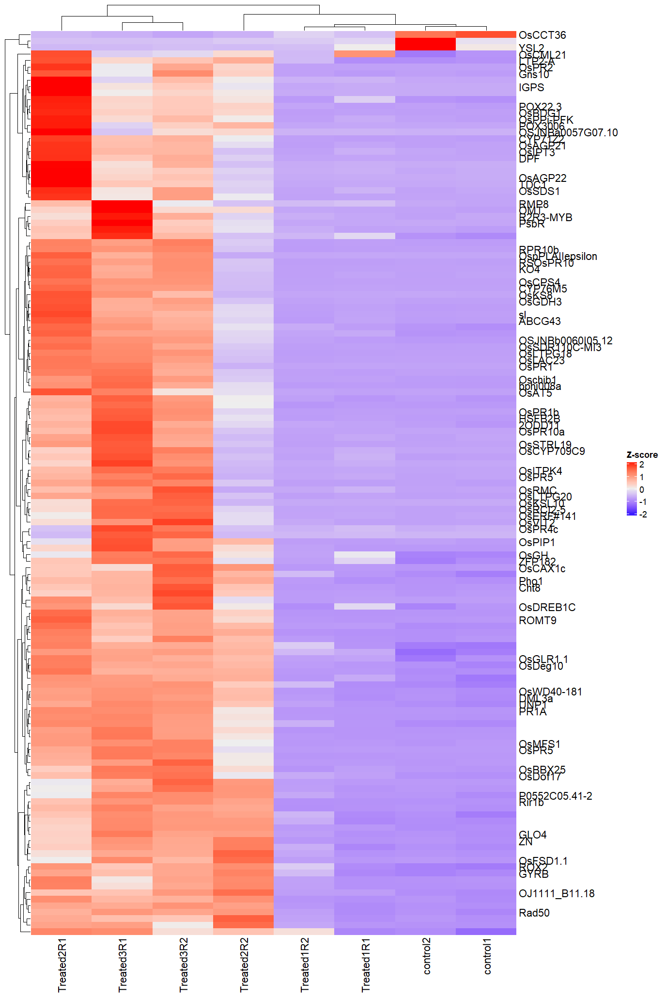
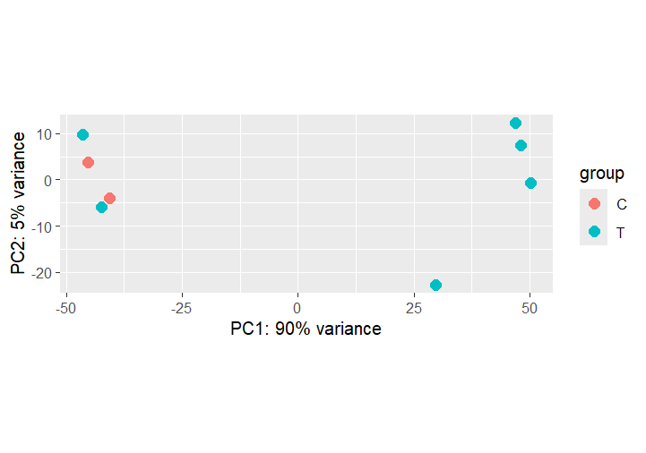
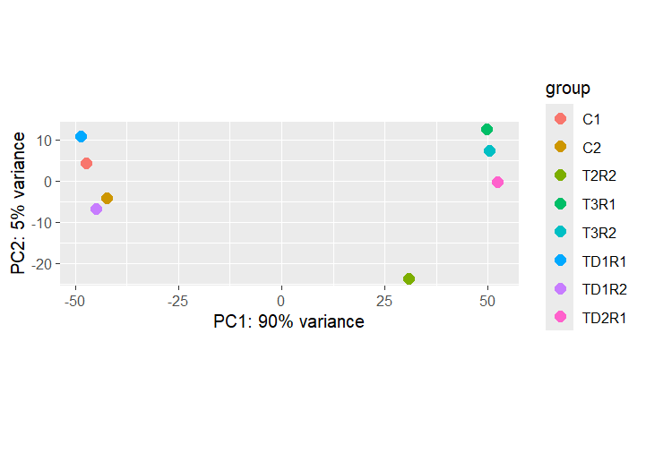
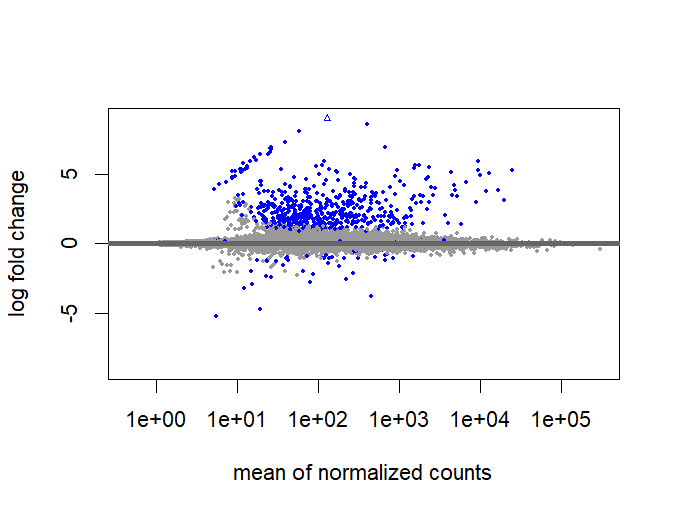
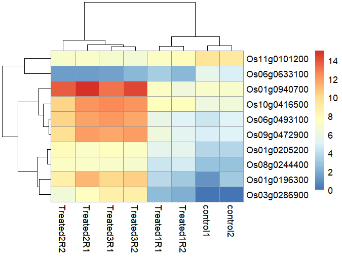

RNA-seq experiments are performed to comprehend transcriptomic changes in organisms in response to a treatment or mutation. This project reproduces the full analysis pipeline from Cui et al. (2021), who characterised how Oryza sativa reprograms its transcriptome upon infection by Magnaporthe oryzae — the fungal pathogen responsible for rice blast disease, which causes major crop losses worldwide.
Raw data were downloaded from NCBI SRA (SRP230674 and SRP230704). The pipeline covers all steps from quality checking of reads through alignment, quantification, and identification of differentially expressed genes (DEGs). The overview is illustrated in the workflow below.
Download
MultiQC
Alignment
Counts
DEGs
Results
Experimental Design
Sample structure, conditions, and sequencing strategy
The experiment compares Treated (T) rice samples — inoculated with M. oryzae — against Control (C) mock-inoculated samples, sampled at multiple time points post-inoculation. RNA was extracted from leaf tissue; libraries were sequenced on Illumina. We have three biological replicates per condition.
| Condition | Description | Replicate 1 | Replicate 2 | Replicate 3 |
|---|---|---|---|---|
| T (Treated) | M. oryzae-infected | SRR…_T_1.fastq.gz | SRR…_T_2.fastq.gz | SRR…_T_3.fastq.gz |
| C (Control) | Mock inoculation | SRR…_C_1.fastq.gz | SRR…_C_2.fastq.gz | SRR…_C_3.fastq.gz |
Check the SRA BioProject page for the exact SRR accession numbers, sample metadata, and replicate structure before downloading.
Download the Data from Public Repositories
Retrieve raw FASTQ files from NCBI SRA or EMBL-EBI ENA
Raw sequencing data for this project are hosted in public repositories. The two main options are: download FASTQ directly from EMBL-EBI's European Nucleotide Archive (ENA), or download SRA archives from NCBI and convert them to FASTQ. Both routes are shown below.
A) Download FASTQ directly from ENA (recommended)
The fastest route is to use wget to pull pre-built FASTQ files from EBI's FTP server. Replace the SRR numbers below with the actual accessions from the BioProject page.
# Download paired-end FASTQ files directly from ENA FTP
# Samples: SRR10498876 – SRR10498883 (Treatment + Control)
wget -c ftp://ftp.sra.ebi.ac.uk/vol1/fastq/SRR104/076/SRR10498876/SRR10498876_1.fastq.gz
wget -c ftp://ftp.sra.ebi.ac.uk/vol1/fastq/SRR104/076/SRR10498876/SRR10498876_2.fastq.gz
wget -c ftp://ftp.sra.ebi.ac.uk/vol1/fastq/SRR104/077/SRR10498877/SRR10498877_1.fastq.gz
wget -c ftp://ftp.sra.ebi.ac.uk/vol1/fastq/SRR104/077/SRR10498877/SRR10498877_2.fastq.gz
wget -c ftp://ftp.sra.ebi.ac.uk/vol1/fastq/SRR104/078/SRR10498878/SRR10498878_1.fastq.gz
wget -c ftp://ftp.sra.ebi.ac.uk/vol1/fastq/SRR104/078/SRR10498878/SRR10498878_2.fastq.gz
wget -c ftp://ftp.sra.ebi.ac.uk/vol1/fastq/SRR104/079/SRR10498879/SRR10498879_1.fastq.gz
wget -c ftp://ftp.sra.ebi.ac.uk/vol1/fastq/SRR104/079/SRR10498879/SRR10498879_2.fastq.gz
wget -c ftp://ftp.sra.ebi.ac.uk/vol1/fastq/SRR104/080/SRR10498880/SRR10498880_1.fastq.gz
wget -c ftp://ftp.sra.ebi.ac.uk/vol1/fastq/SRR104/080/SRR10498880/SRR10498880_2.fastq.gz
wget -c ftp://ftp.sra.ebi.ac.uk/vol1/fastq/SRR104/081/SRR10498881/SRR10498881_1.fastq.gz
wget -c ftp://ftp.sra.ebi.ac.uk/vol1/fastq/SRR104/081/SRR10498881/SRR10498881_2.fastq.gz
wget -c ftp://ftp.sra.ebi.ac.uk/vol1/fastq/SRR104/082/SRR10498882/SRR10498882_1.fastq.gz
wget -c ftp://ftp.sra.ebi.ac.uk/vol1/fastq/SRR104/082/SRR10498882/SRR10498882_2.fastq.gz
wget -c ftp://ftp.sra.ebi.ac.uk/vol1/fastq/SRR104/083/SRR10498883/SRR10498883_1.fastq.gz
wget -c ftp://ftp.sra.ebi.ac.uk/vol1/fastq/SRR104/083/SRR10498883/SRR10498883_2.fastq.gz
# Decompress all downloaded files
gunzip *.gzB) Download from NCBI using SRA Toolkit + aspera
Alternatively, use NCBI's SRA Toolkit with aspera high-speed transfer. This requires sra-toolkit, edirect, and parallel to be installed on your cluster.
Sometimes users encounter perl issues when using edirect. The installed version of perl must support the HTTPS protocol. If you hit errors, check with perl -MHTTP::Tiny -e 'print "OK\n"'.
module load sra-toolkit
module load edirect
module load parallel
# Step 1 — Fetch all SRR accession numbers for the project
esearch -db sra -query SRP230674 | \
efetch --format runinfo | \
cut -d "," -f 1 | \
awk 'NF>0' | \
grep -v "Run" > srr_numbers.txt
# Step 2 — Build prefetch commands
while read line; do
echo "prefetch --max-size 100G --transport ascp \
--ascp-path \"/path/to/aspera/ascp|/path/to/asperaweb_id_dsa.openssh\" \
${line}"
done < srr_numbers.txt > prefetch.cmds
# Step 3 — Run all downloads in parallel
parallel < prefetch.cmdsC) Convert SRA archives to FASTQ format
fastq-dump runs very slowly on large SRA files. Use GNU parallel to process multiple files simultaneously, or consider using fasterq-dump (newer, faster alternative).
module load parallel
INDIR="/path/to/sra/files" # folder containing downloaded .sra files
# Convert all .sra files to FASTQ in parallel
parallel "fastq-dump --split-files --origfmt --gzip {}" \
::: ${INDIR}/*.sra
# --split-files : creates _1.fastq.gz and _2.fastq.gz for paired-end
# --gzip : compress output to save disk spaceD) Download the rice reference genome and annotation
We need the Oryza sativa genome (FASTA) and the gene annotation (GFF3/GTF). These are available from Ensembl Plants or NCBI. Always use matching versions for both files.
# Download genome FASTA and GTF from Ensembl Plants (release 57)
wget "https://ftp.ensemblgenomes.ebi.ac.uk/pub/plants/release-57/\
fasta/oryza_sativa/dna/Oryza_sativa.IRGSP-1.0.dna.toplevel.fa.gz"
wget "https://ftp.ensemblgenomes.ebi.ac.uk/pub/plants/release-57/\
gtf/oryza_sativa/Oryza_sativa.IRGSP-1.0.57.gtf.gz"
# Decompress both files before use
gzip -d Oryza_sativa.IRGSP-1.0.dna.toplevel.fa.gz
gzip -d Oryza_sativa.IRGSP-1.0.57.gtf.gzAlways use the same Ensembl Plants release for both the genome FASTA and the GTF file. Mixing versions causes gene ID mismatches in featureCounts and DESeq2.
Quality Check
Assess read quality with FastQC and MultiQC before alignment
We use FastQC to perform quality control checks on raw sequencing reads. It generates reports covering per-base quality scores, GC content, adapter contamination, sequence duplication, and more. A high-quality Illumina RNA-seq file should show per-base quality scores above Q30 across almost all positions.
A) Run FastQC on all FASTQ files
module load fastqc
module load parallel
# Create output directory
mkdir -p fq_out_directory
OUTDIR=fq_out_directory
# Run FastQC on all FASTQ files in parallel
# {} is replaced by each filename; -o sets output folder
parallel "fastqc {} -o ${OUTDIR}" ::: *.fastq.gzFor 6 samples this produces 6 HTML reports and 6 ZIP files in fq_out_directory/. Open any .html file in a browser to inspect quality metrics for that sample.
B) Aggregate all reports with MultiQC
MultiQC scans the FastQC output folder and produces a single interactive HTML summary across all samples — essential for quickly spotting batch effects or outlier samples.
cd fq_out_directory
module load python/3
module load py-multiqc # or: pip install multiqc
multiqc .
# MultiQC output:
# multiqc_report.html ← open this in a browser
# multiqc_data/ ← raw stats in text files
# multiqc_fastqc.txt
# multiqc_general_stats.txt
# multiqc_sources.txt
If per-base quality drops below Q20 at the 3′ end, trim reads with fastp before alignment (see trimming note below). If adapter content is high, add ILLUMINACLIP parameters. If a sample looks very different from others, consider excluding it from downstream analysis.
C) Trim reads with fastp (if needed)
If FastQC shows adapter contamination or quality drops, trim with fastp before mapping. This step is optional if the raw reads pass QC.
# Install fastp
sudo apt-get install fastp
# Trim a paired-end sample
fastp -i sample_1.fastq -o trim_sample_1.fastq -I sample_2.fastq -O trim_sample_2.fastq --adapter_fasta adapter.fasta
# Re-run FastQC on trimmed files to confirm quality
fastqc trim_sample_1.fastq trim_sample_2.fastqMapping Reads to the Genome
Splice-aware alignment with HISAT2
Generic DNA aligners such as BWA, Bowtie2, or BBMap are not suitable for RNA-seq. Because mRNA reads span exon–intron junctions, they require a splice-aware mapper that can split a single read across an intron. We use HISAT2, the successor to TopHat2.
These aligners cannot handle reads that span splice junctions. Using them for RNA-seq leads to many unmapped reads and severely distorted count data.
A) Build the HISAT2 genome index
The genome must be indexed once before mapping. Save the following as indexing_hisat2.sh and submit with sbatch.
#!/bin/bash
#SBATCH -N 1
#SBATCH --ntasks-per-node=16
#SBATCH --time=1:00:00
#SBATCH --job-name=HI_build
#SBATCH --output=HI_build.%j.out
#SBATCH --error=HI_build.%j.err
#SBATCH --mail-user=your@email.com
#SBATCH --mail-type=end
set -o xtrace
cd ${SLURM_SUBMIT_DIR}
ulimit -s unlimited
module load hisat2
GENOME_FNA="/path/to/Oryza_sativa.IRGSP-1.0.dna.toplevel.fa"
GENOME=${GENOME_FNA%.*} # drops the .fa extension → used as index prefix
hisat2-build ${GENOME_FNA} ${GENOME}sbatch indexing_hisat2.shOnce complete you will see 8 index files with the .ht2 extension:
Update the GENOME_FNA variable with the actual path to your genome FASTA file. If the file is still gzip-compressed, decompress it first: gzip -d filename.fa.gz
The #SBATCH --time value is in hours:minutes:seconds. For indexing the rice genome, 1:00:00 is sufficient. If outputs were not generated, check HI_build.{jobID}.err for error messages.
B) Map reads with HISAT2
Create two scripts: run_hisat2.sh (maps one sample) and loop_hisat2.sh (submits all samples via SLURM).
#!/bin/bash
set -o xtrace
GENOME="/path/to/index/Oryza_sativa.IRGSP-1.0" # index prefix (no .ht2)
OUTDIR="/path/to/bam_files"
[[ -d ${OUTDIR} ]] || mkdir -p ${OUTDIR}
p=8 # threads
R1_FQ="$1" # first argument: forward reads
R2_FQ="$2" # second argument: reverse reads
module purge
module load hisat2
module load samtools
OUTFILE=$(basename ${R1_FQ} | cut -f 1 -d "_")
# Map a single paired-end sample (example: Treated2R2)
hisat2 --dta-cufflinks -p 6 -x rice_index -1 Treated2R2_1.fastq -2 Treated2R2_2.fastq > Treated2R2.bam
# Sort and index the BAM file
samtools sort Treated2R2.bam > sorted_Treated2R2.bam
samtools index sorted_Treated2R2.bam
# Optional: convert BAM to SAM for inspection
samtools view sorted_Treated2R2.bam > sorted_Treated2R2.sam
head -50 sorted_Treated2R2.sam#!/bin/bash
# Map all samples and get sorted BAM files directly
for sample in control1 control2 Treated3R2 Treated3R1 Treated2R2 Treated2R1 Treated1R2 Treated1R1; do
hisat2 --dta-cufflinks -p 6 -x rice_index -1 ${sample}_1.fastq -2 ${sample}_2.fastq | samtools sort -o sorted_${sample}.bam
samtools index sorted_${sample}.bam
echo "✅ Mapped and sorted: ${sample}"
donesbatch loop_hisat2.shExpected output — one BAM file per sample:
Abundance Estimation
Count reads per gene using featureCounts
To quantify gene expression we count how many aligned reads overlap each annotated gene. featureCounts (from the Subread package) is highly efficient and outputs a count matrix directly usable by DESeq2. It also produces summary statistics on mapping rates and ambiguous reads.
A) Run featureCounts on all BAM files
Use RSeQC infer_experiment.py to determine library strandedness before running featureCounts. The -s flag must match: 0 = unstranded, 1 = stranded (forward), 2 = stranded (reverse). Wrong setting causes severe undercounting.
#!/bin/bash
#SBATCH -N 1
#SBATCH --ntasks-per-node=16
#SBATCH --time=6:00:00
#SBATCH --job-name=featureCounts
set -o xtrace
cd ${SLURM_SUBMIT_DIR}
ulimit -s unlimited
ANNOT_GFF="/path/to/Oryza_sativa.IRGSP-1.0.57.gtf" # must be decompressed
INDIR="/path/to/bam_files"
OUTDIR=counts
[[ -d ${OUTDIR} ]] || mkdir -p ${OUTDIR}
module purge
module load subread
module load parallel
parallel -j 4 \
"featureCounts -T 4 -s 2 -p -t gene -g ID \
-a ${ANNOT_GFF} \
-o ${OUTDIR}/{/.}.gene.txt {}" \
::: ${INDIR}/*.bam
scontrol show job ${SLURM_JOB_ID}Each output file has a header comment line and seven columns. Example:
B) Merge all count files into one table
Combine the individual per-sample count files using paste and awk to create a single count matrix for import into R.
cd counts/
# Merge: keep GeneID (col 1) + count (col 7) from each file
paste \
<(awk 'BEGIN{OFS="\t"} NR>1 {print $1,$7}' SRR_T_rep1.gene.txt) \
<(awk 'BEGIN{OFS="\t"} NR>1 {print $7}' SRR_T_rep2.gene.txt) \
<(awk 'BEGIN{OFS="\t"} NR>1 {print $7}' SRR_T_rep3.gene.txt) \
<(awk 'BEGIN{OFS="\t"} NR>1 {print $7}' SRR_C_rep1.gene.txt) \
<(awk 'BEGIN{OFS="\t"} NR>1 {print $7}' SRR_C_rep2.gene.txt) \
<(awk 'BEGIN{OFS="\t"} NR>1 {print $7}' SRR_C_rep3.gene.txt) \
| grep -v '^\#' \
> rice_count_matrix.txt
# Add header manually
sed -i '1s/^/GeneID\tT_rep1\tT_rep2\tT_rep3\tC_rep1\tC_rep2\tC_rep3\n/' \
rice_count_matrix.txtThe resulting file looks like this:
This count matrix is the direct input for DESeq2 in Step 5.
Differential Gene Expression with DESeq2
Identify DEGs between Treated and Control in R / RStudio
DESeq2 is a Bioconductor R package specifically designed for differential expression analysis of count data from RNA-seq. It applies a negative binomial distribution model, shrinkage estimation of fold changes, and Benjamini-Hochberg correction for multiple testing. All steps below are run in RStudio or an R terminal.
A) Install packages, load data, and build DESeqDataSet
## ── Load libraries ─────────────────────────────────────
library(DESeq2)
library(ggplot2)
setwd("C:/Users/DELL/Desktop/RNA-seq_Analysis")
## ── Read count data ────────────────────────────────────
Counts <- read.delim("count_table.csv", row.names = 1,
header = TRUE, sep = ";")
## ── Filter low-count genes (rowSum >= 5) ──────────────
dat <- Counts[which(rowSums(Counts) >= 5), ]
## ── Convert to matrix ─────────────────────────────────
dat <- as.matrix(dat)
head(dat)
## ── Set factor levels (6 Treated, 2 Control) ──────────
condition <- factor(c(rep("T", 6), rep("C", 2)))
condition <- relevel(condition, ref = "C") # Control = reference
## ── Build coldata (metadata) frame ────────────────────
coldata <- data.frame(row.names = colnames(dat),
condition = condition)
## ── Create DESeqDataSet and run full pipeline ──────────
dds <- DESeqDataSetFromMatrix(countData = dat,
colData = coldata,
design = ~ condition)
dds <- DESeq(dds)
## ── Extract results (Treated vs Control) ──────────────
deseq_results <- results(dds, contrast = c("condition", "T", "C"))
deseq_results <- as.data.frame(deseq_results)
deseq_results$GeneName <- row.names(deseq_results)
## ── Reorder columns ───────────────────────────────────
deseq_results <- subset(deseq_results,
select = c("GeneName", "padj", "pvalue", "lfcSE",
"stat", "log2FoldChange", "baseMean"))
## ── Write all results ─────────────────────────────────
write.table(deseq_results, file = "deseq_results.tsv",
row.names = FALSE, sep = " ")
## ── Extract significant DEGs (padj < 0.05, |LFC| >= 1)
DEG <- subset(deseq_results, padj < 0.05 & abs(log2FoldChange) >= 1)
DEG <- DEG[order(DEG$padj), ]
write.table(DEG, file = "deseq_DEG.tsv",
row.names = FALSE, sep = " ")B) Run DESeq2 and plot dispersion + PCA
## ── Dispersion estimates plot ──────────────────────────
png("qc-dispersions.png", 1000, 1000, pointsize = 20)
plotDispEsts(dds, main = "Dispersion Estimates")
dev.off()
## ── Variance stabilising transformation ───────────────
vsd <- vst(dds, blind = FALSE)
## ── PCA: Treatment vs Control ─────────────────────────
plotPCA(vsd, intgroup = "condition")
# Save to file:
pca_plot <- plotPCA(vsd, intgroup = "condition")
ggsave("PCA_T_vs_C.png", pca_plot, width = 7, height = 5)

C) Sample distance heatmap
library(pheatmap)
library(RColorBrewer)
## ── Compute sample-to-sample distances (VST) ──────────
sampleDists <- dist(t(assay(vsd)))
sampleDistMatrix <- as.matrix(sampleDists)
rownames(sampleDistMatrix) <- colnames(vsd)
colnames(sampleDistMatrix) <- NULL
colors <- colorRampPalette(rev(brewer.pal(9, "Blues")))(255)
## ── Plot and save sample distance heatmap ─────────────
png("qc-heatmap-samples.png", width = 1000, height = 1000, pointsize = 20)
pheatmap(sampleDistMatrix,
clustering_distance_rows = sampleDists,
clustering_distance_cols = sampleDists,
col = colors,
main = "Sample Distance Matrix")
dev.off()D) Extract differential expression results
## ── Results already extracted in Step 5A ─────────────
# deseq_results contains all genes; DEG contains significant ones
dim(deseq_results) # total tested genes
dim(DEG) # significant DEGs
## ── Quick visualisation: top gene by log2FC ───────────
topGene <- rownames(deseq_results)[which.max(deseq_results$log2FoldChange)]
plotCounts(dds, gene = topGene, intgroup = "condition")
## ── Normalised count table for all samples ────────────
normalized_counts <- counts(dds, normalized = TRUE)
head(normalized_counts)
## ── Histogram of p-values ─────────────────────────────
png("hist-pvalue.png", 1000, 1000, pointsize = 20)
hist(deseq_results$pvalue,
breaks = seq(0, 1, length = 21),
col = "grey", border = "white",
xlab = "p-value", ylab = "Frequency",
main = "Frequencies of p-value")
dev.off()E) MA Plot
An MA plot shows the log2 fold-change (M) on the y-axis against the mean expression level (A) on the x-axis. Significant DEGs (padj < 0.05) are highlighted in red.
## ── MA plot — raw (before LFC shrinkage) ──────────────
plotMA(dds, ylim = c(-9, 9))
## ── LFC shrinkage with apeglm ──────────────────────────
if (!requireNamespace("BiocManager", quietly = TRUE))
install.packages("BiocManager")
BiocManager::install("apeglm")
library(apeglm)
resLFC <- lfcShrink(dds, coef = "condition_T_vs_C", type = "apeglm")
## ── MA plot after shrinkage ───────────────────────────
plotMA(resLFC, ylim = c(-5, 5))
F) Heatmap of top differentially expressed genes
## ── Get normalized counts ─────────────────────────────
normalized_counts <- counts(dds, normalized = TRUE)
transformed_counts <- log2(normalized_counts + 1)
## ── Select top 10 DEG gene names ──────────────────────
top_hits <- row.names(DEG[1:10, ])
top_hits <- transformed_counts[top_hits, ]
library(pheatmap)
## ── Simple heatmap (no clustering) ───────────────────
pheatmap(top_hits, cluster_rows = FALSE,
cluster_cols = FALSE, show_rownames = TRUE)
## ── Heatmap with hierarchical clustering ─────────────
pheatmap(top_hits)
## ── Z-score heatmap (all significant DEGs) ───────────
cal_z_score <- function(x) (x - mean(x)) / sd(x)
zscore_all <- t(apply(normalized_counts, 1, cal_z_score))
zscore_subset <- zscore_all[row.names(DEG[1:10, ]), ]
pheatmap(zscore_subset)
G) Volcano Plot
A volcano plot visualises the relationship between statistical significance (–log10 adjusted p-value) and fold change. Colour-coded points show: genes significant by p-value only (red), genes with large fold change only (orange), and genes meeting both criteria (green).
## ── Install and load EnhancedVolcano ──────────────────
if (!requireNamespace("BiocManager", quietly = TRUE))
install.packages("BiocManager")
BiocManager::install("EnhancedVolcano")
library(EnhancedVolcano)
## ── Define custom colours ─────────────────────────────
keyvals <- ifelse(
deseq_results$log2FoldChange >= 1.0 & deseq_results$pvalue < 0.05, "red",
ifelse(deseq_results$log2FoldChange <= -1.0 & deseq_results$pvalue < 0.05,
"royalblue", "grey"))
names(keyvals)[keyvals == "red"] <- "UP Regulated"
names(keyvals)[keyvals == "royalblue"] <- "DOWN Regulated"
names(keyvals)[keyvals == "grey"] <- "NS"
## ── Publication-grade Volcano plot ───────────────────
png("VolcanoPlot_Rice.png", width = 2000, height = 1200, res = 150)
EnhancedVolcano(deseq_results,
lab = rownames(deseq_results),
x = "log2FoldChange",
y = "pvalue",
pCutoff = 0.1,
FCcutoff = 1.0,
colCustom = keyvals,
title = "Infected vs Control",
subtitle = "Up and Down Regulated Genes",
pointSize = 1.5,
labSize = 3.0,
legendPosition = "right",
legendLabSize = 12,
legendIconSize = 4.0,
drawConnectors = TRUE,
widthConnectors = 0.5)
dev.off()
All Results Figures
Click any figure to enlarge
PCA — Treated vs Control
PC1 captures infection-driven variance
PCA — Treatment × Day
Temporal dynamics of the transcriptome
QC Sample Distance Heatmap
Sample-to-sample distances; replicate quality
MA Plot
Log2 FC vs mean expression; red = DEGs
Normalized Counts
DESeq2-normalised counts for top DEG
Heatmap — Top DEGs
Hierarchical clustering of top 10 DEGs
Reference & Data Availability
All raw sequencing data are publicly available at NCBI SRA under accessions SRP230674 and SRP230704 as deposited by the original authors. Analysis scripts are available at github.com/MariamAmouzoune/rice-rnaseq-magnaporthe.